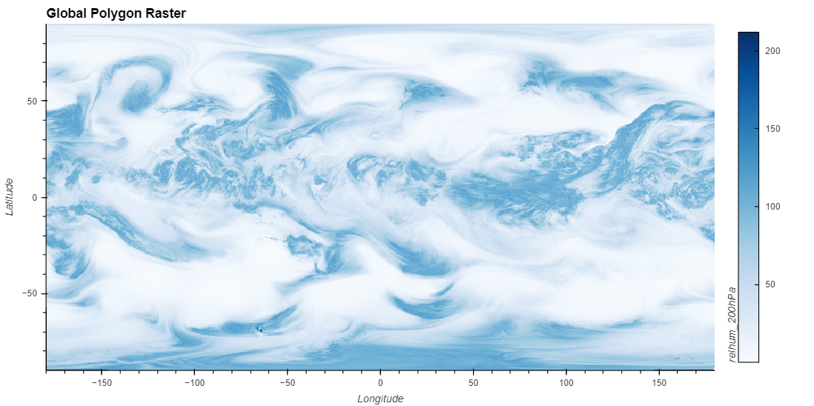
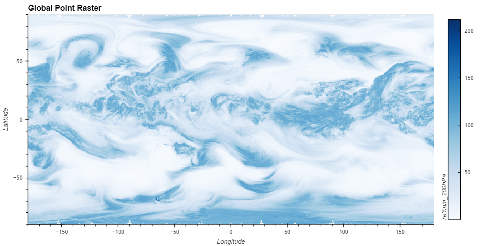
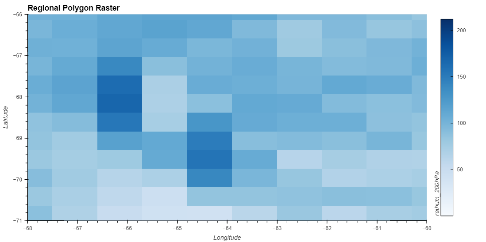
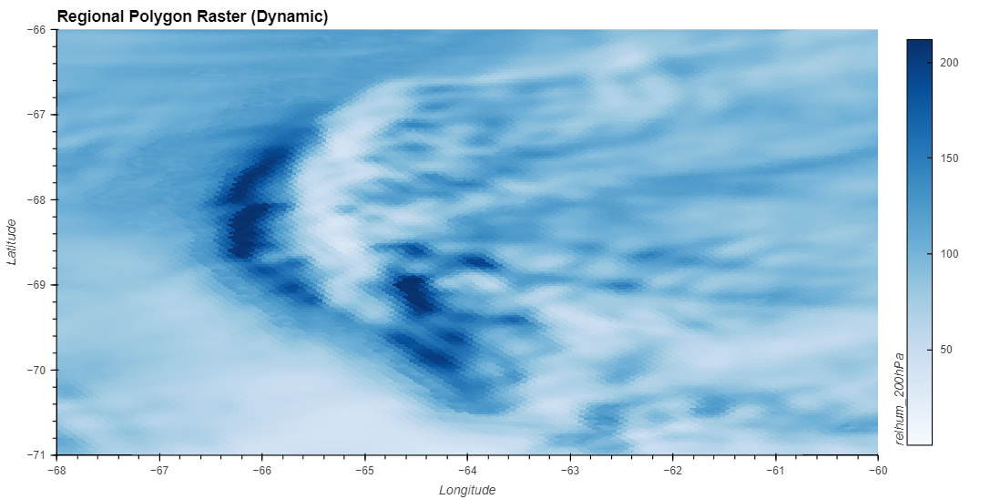
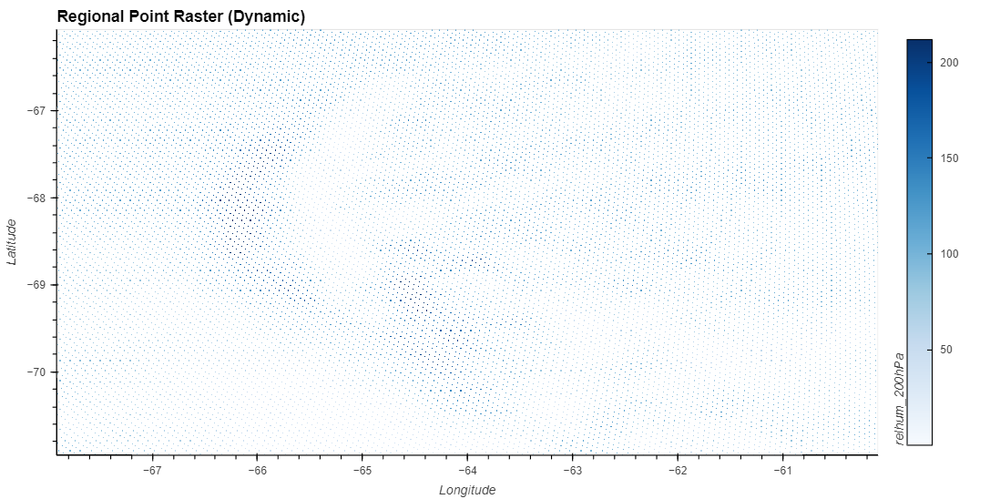
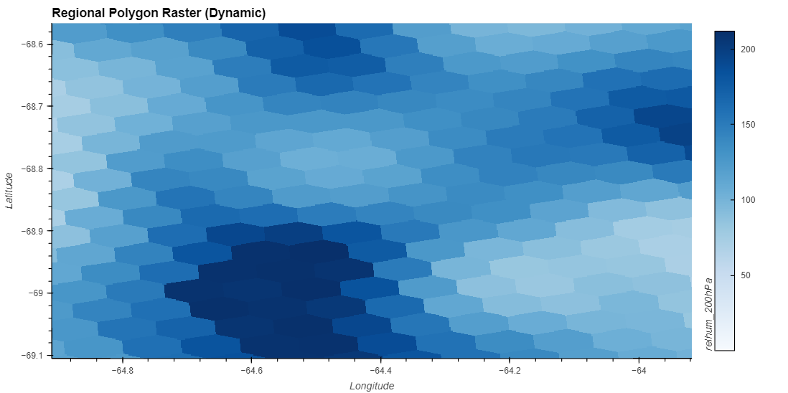

Visualization at Scale
When working with large datasets, it’s crucial to consider the performance of each visualization method. This notebook investigates the performance and data fidelity of the previously covered methods using high-resolution grids.
Benchmarked Dataset
The dataset used for the timings and examples in this notebook were provided curtesy of the DYAMOND Initiative.
There are four datasets, each from the same experiment, but with different grid resolutions. The table below summarizes the scale of these datasets:
Element / Resolution |
30km |
15km |
7.5km |
3.75km |
|---|---|---|---|---|
Faces |
655,362 |
2,621,442 |
10,485,762 |
41,943,042 |
Nodes |
1,310,720 |
5,242,880 |
20,971,520 |
83,886,080 |
Data Processing Timings
Timings were taken on a single NCAR Derecho Node. All results are in seconds.
Initial Run
Visualization Method / Grid Resolution |
30km |
15km |
7.5km |
3.75km |
|---|---|---|---|---|
Polygon Raster (Including Antimeridian) |
28.5 |
122.2 |
463 |
1990 |
Polygon Raster (Excluding Antimeridian) |
1.69 (0.23) |
5.96 (0.09) |
23.1 (0.52) |
93 (1.01) |
Point Raster |
0.13 (0.03) |
0.16 (0.01) |
0.35 (0.00) |
1.08 (0.07) |
We can see that Point Rasters are quickest, averaging about 86 times faster than Polygon Rasters (Excluding Antimeridian Polygons).
Both polygon methods scale linearly with an increase in resolution. A doubling in resolution leads to about a 4x increase in the number of polygons (a.k.a polygons), which is also observed in the timings.
Including antimeridian polygons leads to about a 20x slowdown across all resolutions, so it’s suggested to keep exclude_antimeridian=True when working with larger datasets.
Subsequent Runs
Visualization Method / Grid Resolution |
30km |
15km |
7.5km |
3.75km |
|---|---|---|---|---|
Polygon Raster (Including Antimeridian) |
0.31 (0.00) |
1.32 (0.31) |
3.85 (0.06) |
14.36 (0.13) |
Polygon Raster (Excluding Antimeridian) |
0.30 (0.00) |
1.02 (0.36) |
3.46 (0.01) |
13.60 (0.08) |
Point Raster |
0.13 (0.03) |
0.16 (0.01) |
0.35 (0.00) |
1.08 (0.07) |
For subsequent runs (i.e. we have already run one plotting instance, which computes and caches the necessary data structures), performance for both Polygon methods is essentially identical.
There is no caching currently implemented for Point Rasters, so the performance for each run is consistent with the initial run.
Important!
The timings above benchmark the data processing time (i.e. total time needed to transform an unstructured grid into a format that is able to be
rendered). Actual visualization times will vary depending on choices in parameters.
A detailed benchmark of total visualization times (i.e. data processing and rendering to screen) will be added to this notebook in the future.
Polygon vs Point Rasters
Both the Polygon and Point notebooks showed off how these elements could be rasterizer.
Global
For certain visualization workflows, one may only be interested in observing the global trends of a data variable.
uxds['relhum_200hPa'][0].plot.rasterize(method='polygon',
width=1000, height=500, exclude_antimeridian=True,
clim=clim,
title="Global Polygon Raster")

uxds['relhum_200hPa'][0].plot.rasterize(method='point',
width=1000,
height=500,
clim=clim,
title="Global Point Raster")

We can see that both the Polygon and Point Rasters capture the global trend of our data variable.
Regional
However, it’s also common to zoom into a region of interested (i.e. Continental United States, Europe, etc.) to observe how a data variable acts on these more refined regions.
uxds['relhum_200hPa'][0].plot.rasterize(method='polygon',
width=1000,
height=500,
exclude_antimeridian=True,
dynamic=False,
xlim=(-68, -60),
ylim=(-71, -66),
clim=clim,
title="Regional Polygon Raster")

uxds['relhum_200hPa'][0].plot.rasterize(method='point',
width=1000,
height=500,
dynamic=False,
xlim=(-68, -60),
ylim=(-71, -66),
clim=clim,
title="Regional Point Raster")
Without specifying any additional parameters, both the Polygon and Point rasters look identical.
However, setting the parameter dynamic=True, which dynamically performs the rasterization operations as we zoom and pan across a plot, we can start to see the differences between both types of plots.
uxds['relhum_200hPa'][0].plot.rasterize(method='polygon',
width=1000,
height=500,
exclude_antimeridian=True,
dynamic=True, xlim=(-68, -60),
ylim=(-71, -66),
clim=clim,
title="Regional Polygon Raster (Dynamic)")

uxds['relhum_200hPa'][0].plot.rasterize(method='point',
width=1000,
height=500,
dynamic=True, xlim=(-68, -60),
ylim=(-71, -66),
clim=clim,
title="Regional Point Raster (Dynamic)")

The Polygon Raster can be zoomed in indefinitely, which is due to each polygon covering a region of our screen.
However, zooming in to our Point Rasters exposes how each point is still simply a pair of latitude and longitude coordinates, without any sense of area. After a certain point, there isn’t enough points to sample into a uniform looking raster image, and we are left with an approximation the individual points.
Zooming in even further with the Polygon Raster, we can start to see each individual cell, even at such a high resolution.
